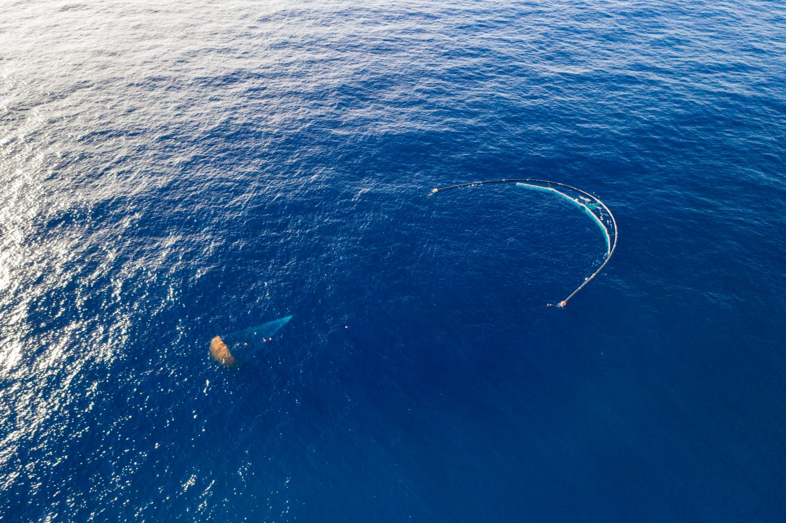
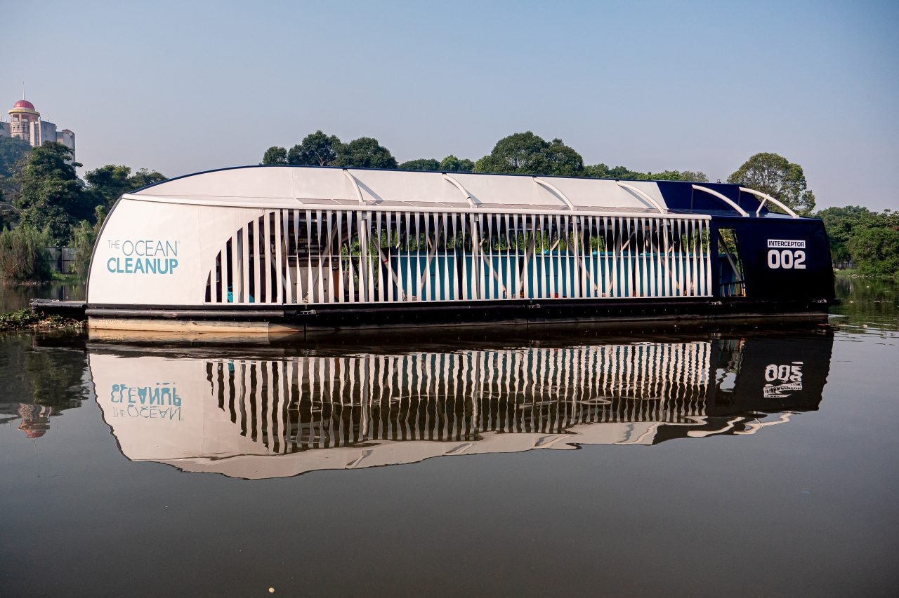
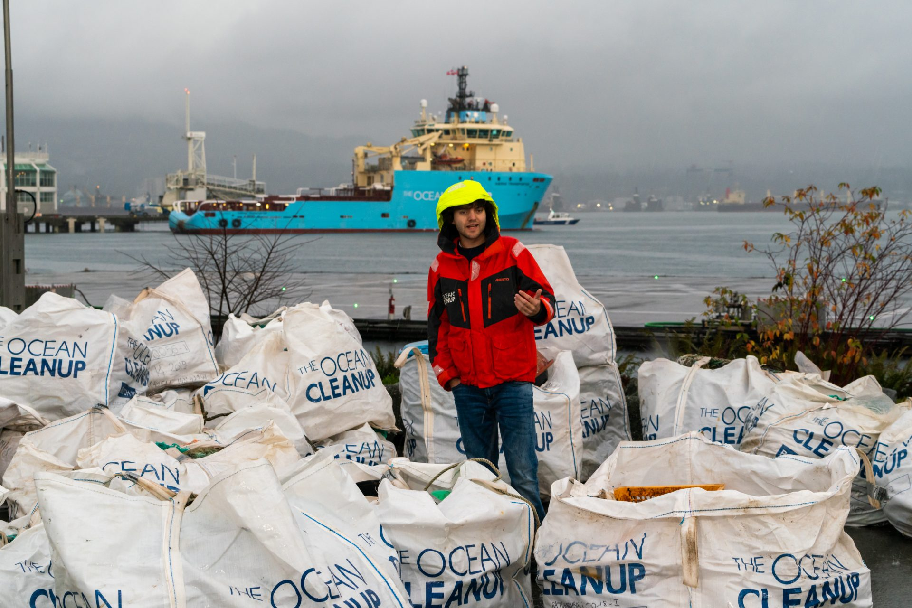
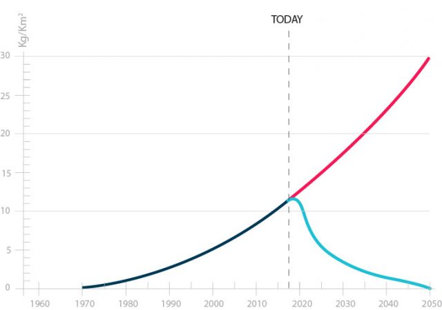

Eventos
Vê aqui as nossas ultimas novidades e dá-nos uma sugestão para uma próxima ação ou evento.

O inventor holandês Boyan Slat fundou a The Ocean Cleanup aos 18 anos na sua cidade natal de Delft, na Holanda.
A equipe da Ocean Cleanup consiste em mais de 80 engenheiros, pesquisadores, cientistas e modeladores computacionais que trabalham diariamente para livrar os oceanos do mundo do plástico.
Nossa sede está localizada em Roterdão, na Holanda. Somos uma instituição de caridade registrada como uma 'Stichting' na Holanda e uma 501 (c) (3) nos EUA.
Boyan Salt
CEO & fundador
Chris Worp
Diretor Executivo
Lonneke Holierhoek
Diretora de Operações
Queres fazer parte da nossa equipa ?
POSTAL ADDRESS
info@ocean.com
+351 123 456 789
+351 123 456 780
Batavierenstraat, 3014 Rotterdam, Países Baixos
REGISTERED ADDRESS
info@ocean.com
+351 123 456 789
+351 123 456 780
535 Mission Street, San Francisco, CA 94105, USA
A Ocean Cleanup está projetando e desenvolvendo sistemas de limpeza para limpar o que já está poluindo os nossos oceanos e interceptar o plástico a caminho do oceano através dos rios.
Uma percentagem significativa do plástico que entra nos oceanos a partir de rios e outras fontes durante uma transferência que pode levar muitos anos, entra em grandes sistemas de correntes oceânicas circulantes, também conhecidas como giros. Uma vez preso num giro, o plástico se decompõe lentamente em microplásticos e se torna cada vez mais fácil confundir os alimentos com a vida marinha.
Ir atrás do plástico nos trechos de lixo com vasos e redes seria caro, demorado, trabalhoso e levaria a grandes quantidades de emissão de carbono e captura acessória. É por isso que a Ocean Cleanup está desenvolvendo uma tecnologia passiva de limpeza oceânica, que se move com as correntes - assim como o plástico - para capturá-lo. Ao implantar uma frota de sistemas, a The Ocean Cleanup calculou ser capaz de remover 50% do Great Pacific Garbage Patch a cada cinco anos.
 System 001/B in the Great Pacific Garbage PatchO plástico concentrado será levado de volta à costa para reciclagem. Os apoiadores podem optar por tomar a limpeza do oceano com suas próprias mãos, juntando-se a essa jornada da poluição ao produto. A receita obtida ajudará a financiar a expansão da limpeza para os outros quatro giros oceânicos.
O Interceptor ™ é a primeira solução escalável para impedir que o plástico entre nos oceanos do mundo a partir de rios. É capaz de extrair 50.000 kg de lixo por dia - chegando a 100.000 kg por dia em condições otimizadas.
 Interceptor™ 002 in Klang River, MalaysiaÉ 100% movido a energia solar, extrai plástico de forma autônoma e pode ser colocado na maioria dos rios mais poluentes do mundo. Juntamente com empresas e governos de todo o mundo, planejamos enfrentar 1000 dos rios mais poluentes do mundo todo nos próximos cinco anos.
A limpeza do oceano é um projeto; nosso objetivo final é alcançar uma redução de 90% do plástico oceânico flutuante até o ano 2040.
 Boyan Salt, CEO e fundador, durante o comunicado ao vivo em 12 de dezembro em Vancouver, Canadá
O objetivo da primeira missão da The Ocean Cleanup no Great Pacific Garbage Patch era confirmar o conceito de coleta passiva de plástico por meio das forças naturais do oceano. Após vários altos e baixos, em outubro de 2019, a Ocean Cleanup anunciou que o sistema está capturando e coletando detritos de plástico, de enormes redes fantasmas a microplásticos com um milímetro de tamanho.
Desde o lançamento do primeiro sistema de limpeza, o System 001, em setembro de 2018, a maioria dos itens da longa lista de entregas da tecnologia pôde ser verificada um por um. Relatórios anteriores mostraram, no entanto, que o Sistema 001 não estava retendo o plástico como deveria e, apesar das tentativas de remediar isso e de confirmações bem-sucedidas do projeto, o sistema sofreu uma fratura por fadiga, resultando na necessidade de retornar o sistema à costa em janeiro de 2019.
A equipa de engenharia realizou uma análise de causa raiz, redesenhou um sistema modificado e, em tempo recorde, a The Ocean Cleanup implantou o sistema atualizado, Sistema 001 / B, em junho de 2019. Após vários meses de testes, a capacidade do conceito de capturar plástico foi confirmado.
Impacto da Cleanup
Os nossos modelos indicam que um sistema de implantação em grande escala poderia limpar 50% do Great Pacific Garbage Patch em 5 anos.
Pesquisas mostram que a maioria do plástico nos giros em massa está atualmente nos maiores detritos. Ao remover o plástico enquanto a maioria ainda é grande, impedimos que ele se quebre em microplásticos perigosos.
A combinação da limpeza com a redução da fonte em terra abre caminho para o oceano sem plástico até 2050.
 Concentração de microplásticos com e sem limpeza no Great Pacific Garbage Patch